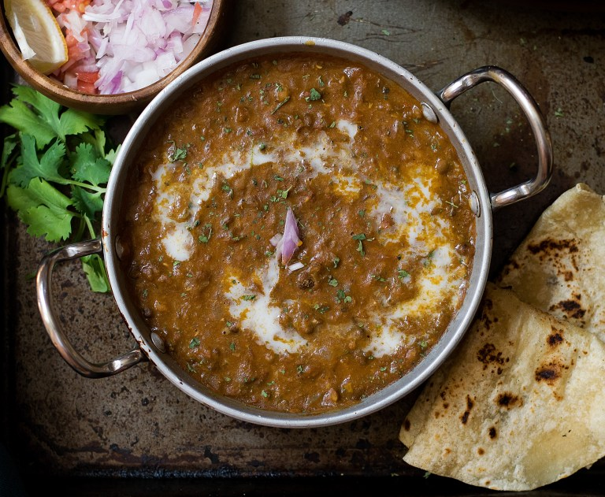

Dal makhani
Dal Makhani is an authentic North Indian recipe, which is undeniably the most popular recipe served in any restaurant. However, you can make this traditional recipe in restaurant style by using some simple ingredients easily available in your kitchen. Made with lentils, red kidney beans, cream and butter, this quick recipe is undoubtedly everyone's favorite when it comes to dining out.
Here how you can make this scrumptious recipe in restaurant style by following some easy steps given below. The best thing about this recipe is its creamy texture and a perfect blend of spices. The best hack to make the kidney beans and lentils more tender is to simply soak them overnight and boil them separately with a pinch of salt. Also, if you want to make this dish very smooth, you can make the bhuna masala first and then grind it and then add the paste; this gives your dal a perfect smooth restaurant style texture.
The richness of this recipe and its flavorful taste has made this dal recipe a hit at restaurants and parties. It tastes best when served with naan, missi roti or jeera rice. You can prepare this delicious recipe for your family and friends. We are sure that they will find it amazingly delicious.
how would you like it?
Ingredients of Dal makhani
| Ingredient | Quantity |
|---|---|
| soaked overnight red kidney beans | 2 tablespoon/td> |
| Red chilli powder | 1 teaspoon |
| butter | 4 tablespoon |
| large chopped onion | 1 |
| tomato puree | 1/2 cup |
| fresh cream | 1/2 cup |
| ginger paste | 1/2 teaspoon |
| salt | 1 pinch |
| chopped ginger | 2 inch |
| sunflower oil | 1 tablespoon |
| medium sliced & slit green chilli | 2 |
| garam masala powder1 teaspoon | 1 teaspoon |
| soaked overnight urad dal | 1/2 cup |
| garlic paste | 1/2 teaspoon |
Method of preparation
- Soak sabut urad and rajma overnight in three cups of water. Drain it and pressure cook in 4 cups of water with a pinch of salt. This makes the rajma and dal soft.
- Take a kadhai on medium flame, then heat the oil and add some cumin seeds.Once the cumin seeds crackle you can add half ginger-garlic paste and stir for sometime. Then you can add some onions, chopped green chillies and tomato puree, fry until the mix turns golden. You can accentuate the taste of this recipe by adding one tablespoon almond paste, which you can prepare with soaked almond. This will make the recipe more creamy. If you are someone who loves the authentic style of Dal Makhani, then we suggest you to use ghee instead of using sunflower oil.
- Once the bhuna masala is ready you can add the pressure cooked Rajma and dal, and bring to boil. If you want your Dal Makhani to be smooth, you can grind the masala first and then add the dal and Rajma.
- Then add some garam masala and salt as per your taste. Stir well and bring to boil, if you think that the paste is too thick you can add some water. Then add some fresh cream to this recipe and stir well. This will make your Dal Makhani creamy and delicious. Garnish this recipe with fresh cream and freshly chopped coriander leaves. You can serve this indulgent recipe with naan, jeera rice and tandoori butter roti. Do not forget to add a dollop of butter in the bowl. This desi recipe will surely win you accolades for culinary skills.